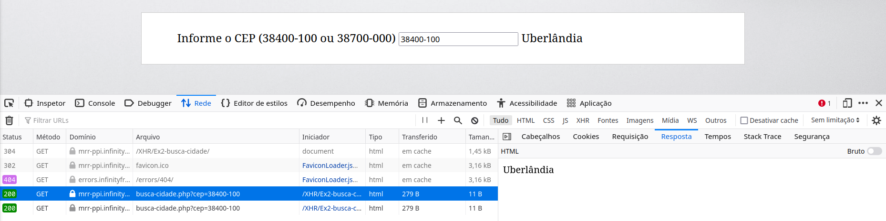
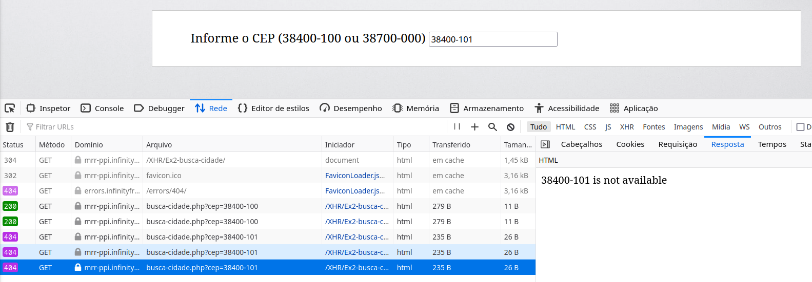
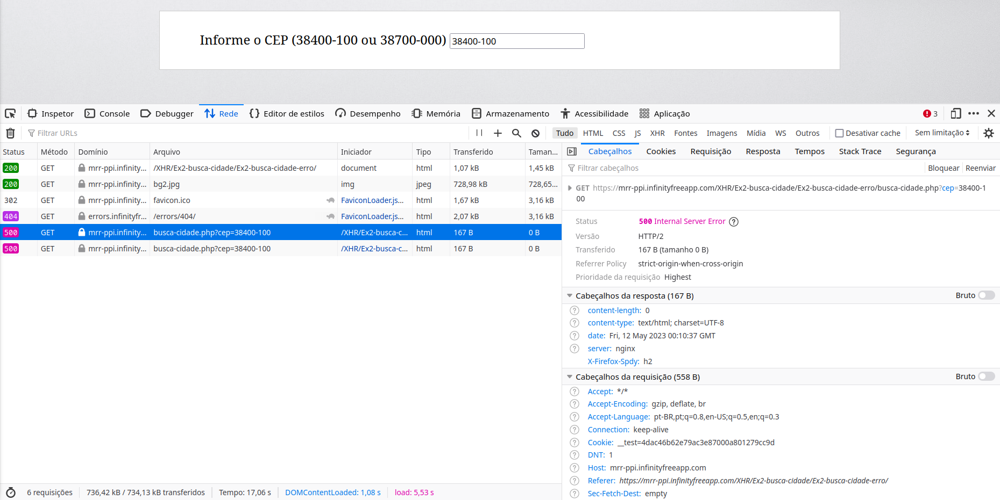

a
b
c
d
Código de status 200, corpo da resposta: "Parse error: syntax error, unexpected 'echo' (T_ECHO) in /home/vol19_2/epizy.com/epiz_33715759/htdocs/XHR/Ex2-busca-cidade/Ex2-busca-cidade-erro/busca-cidade.php on line 6".
Essa configuração seria útil no cenário de debugging no desenvolvimento, porém jamais deve ser utilizada em um ambiente que pode ser acessado por qualquer usuário.